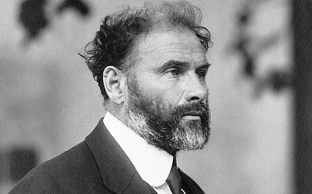

BIOGRAFÍA
Viena, 1862 - id., 1918
Pintor austriaco. Fue la figura más representativa del modernismo pictórico (Jugendstil) en el mundo de habla alemana. Se formó en la escuela de artes aplicadas de su ciudad natal y triunfó como autor de grandes pinturas decorativas en un estilo de corte academicista, del que constituyen un buen exponente las pinturas de la escalera del Museo de Historia del Arte de Viena.
En 1897, su interés por el arte de vanguardia lo llevó a abandonar la Asociación de Artistas Vieneses y a fundar, con algunos amigos, la famosa Secesión Vienesa, de la que fue el primer presidente y máximo exponente.

LEER MAS